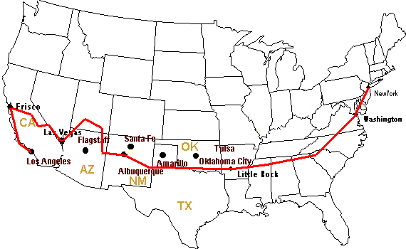

La rotta
Tappe, chilometri e ore
La rotta pianificata alla partenza, è rimasta abbastanza simile, tranne che alla fine abbiamo fatto quasi 9.000 km :) "pur avendo saltato San Francisco, eravamo molto affaticati"
Mappa approssimativa
Posizioni indicative su mappa semplificata degli USA.

| Starting city | Destination City | August | Km | Hours |
|---|---|---|---|---|
| New York | Washington | 4 | 387 | 4.8375 |
| Washington | Wytheville | 6 | 496 | 6.2 |
| Wytherville | Asheville | 7 | 202 | 2.525 |
| Asheville | Nashville | 8 | 388 | 4.85 |
| Nashville | Memphis | 9 | 338 | 4.225 |
| Memphis | Little Rock - 66 | 10 | 225 | 2.8125 |
| Little Rock - 66 | Oklahoma - 66 | 11 | 548 | 6.85 |
| Oklahoma - 66 | Amarillo - 66 | 12 | 425 | 5.3125 |
| Amarillo - 66 | Roswell | 13 | 348 | 4.35 |
| Roswell | Eagar | 14 | 514 | 6.425 |
| Eagar | Valley of the Gods (escalante) | 15 | 454 | 5.675 |
| Valley of the Gods | Zion National Park (hurricane) | 16 | 438 | 5.475 |
| Zion National Park (escalante) | Las Vegas | 17 | 468 | 5.85 |
| Las Vegas | Yosemite Park (mammoth lakes) | 18 | 498 | 6.225 |
| Yosemite Park (mammoth lakes) | San Francisco | 20 | 408 | 5.1 |
| San Francisco | Santa Barbara | 22 | 525 | 6.5625 |
| Santa Barbara | Los Angeles | 23 | 126 | 1.575 |
| AVERAGE | 399.3 | 5.0 | ||
| TOTAL | 6,788.0 | 84.9 | ||